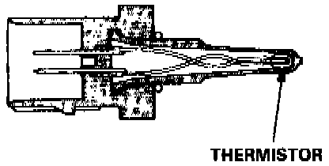
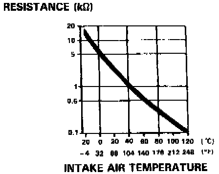

Air Temperature Sensor ( Ambient / Intake ): Testing and Inspection
DTC 10 - INTAKE AIR TEMPERATURE (IAT SENSOR)
PART 1 OF 4

PART 2 OF 4
PART 3 OF 4
PART 4 OF 4
The Malfunction Indicator Lamp (MIL) indicates Diagnostic Trouble Code (DTC) 10: A problem in the Intake Air Temperature (IAT) Sensor circuit.